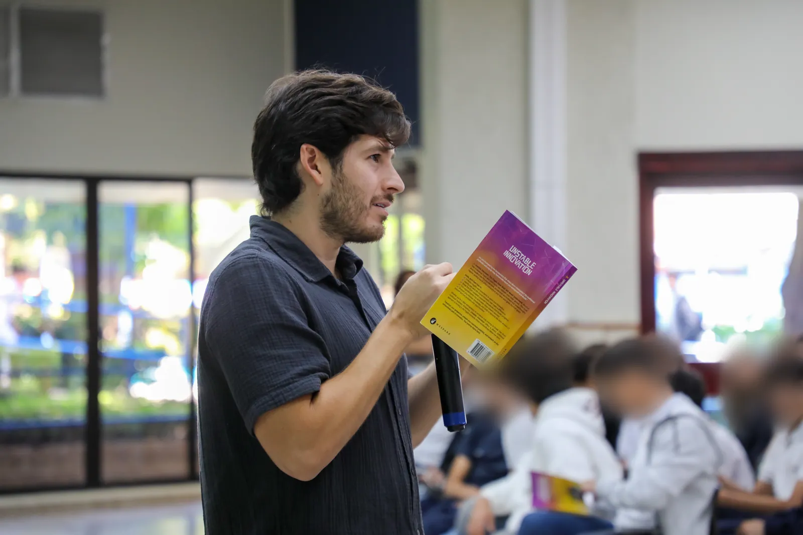

A short book that gets teenagers talking about who they want to become, how the world is changing and which problem they could help solve. Nine chapters, nine class sessions, and every student can read it for free.

Each week: read one chapter at home, discuss one question in class, try one activity. Adapt freely.
Discuss: What two things that have nothing to do with each other could you combine into something new?
Try this: The book opens with three random words: “Apple, Pineapple, Adam Sandler”. Each student picks three random words, connects them into one idea and sketches it.
Discuss: What do you have today that your parents did not have at your age?
Try this: Draw a timeline of one technology over the last 30 years, then predict the next 10.
Discuss: When did hesitating cost you something?
Try this: Keep an “aha moments” notebook for one week: problems you notice, ideas you have, and what you did about them.
Discuss: Which skill would you learn if nobody graded you for it?
Try this: The book suggests breaking small routines to push yourself out of comfort. Break one routine this week and report back.
Discuss: Which rule at school accidentally rewards the wrong behavior?
Try this: Redesign one rule so that doing the right thing is also the easy thing.
Discuss: What have you failed at that taught you something important?
Try this: Use the book's question on a real school problem: “How can I make this problem ten thousand times worse?” Then flip every answer.
Discuss: What would you have to say no to, to do one thing really well?
Try this: Try the book's ten-second pause: before opening a social app or the next episode, wait ten seconds and ask if there is something more worthwhile to do.
Discuss: What does a good life mean to you, not to your parents or your friends?
Try this: Write a one-page letter to yourself five years from now.
Discuss: Which problem in your school, town or country could you start working on?
Try this: Each student pitches one problem and a first small step in 60 seconds.
It is an opinionated book from one entrepreneur, written to provoke thinking. That is what makes it good for class.
Planning to use the book with a whole grade or school? Let Nelson know on LinkedIn.
Yes. It is written in plain language, the chapters are short and the content is clean, so it works from age 13. It is especially useful in the last years of high school, when students start asking what to study and what kind of life they want.
Yes. Unstable Innovation is licensed under Creative Commons BY-NC-SA 4.0. You can copy and share it for free with your students, as long as you credit Nelson Inno, do not sell it, and share any adapted material under the same license. The PDF and EPUB are free on this site.
One chapter a week fits nicely into a 9-week unit. Most students need 20 to 30 minutes of reading per chapter, which leaves class time for discussion and one activity.
Yes. Innovación Inestable is the official Spanish edition, with the same 9 chapters. Students can read in either language and discuss together.
This page is the starting point: a 9-week plan with one discussion question and one activity per chapter. The free practical applications guide and the chapter summaries add more exercises and recaps.
Nelson has read the book with students in El Salvador. To ask about a talk or a workshop, message him on LinkedIn, the only channel he uses for these requests.
Free for every student, nine chapters, nine conversations.